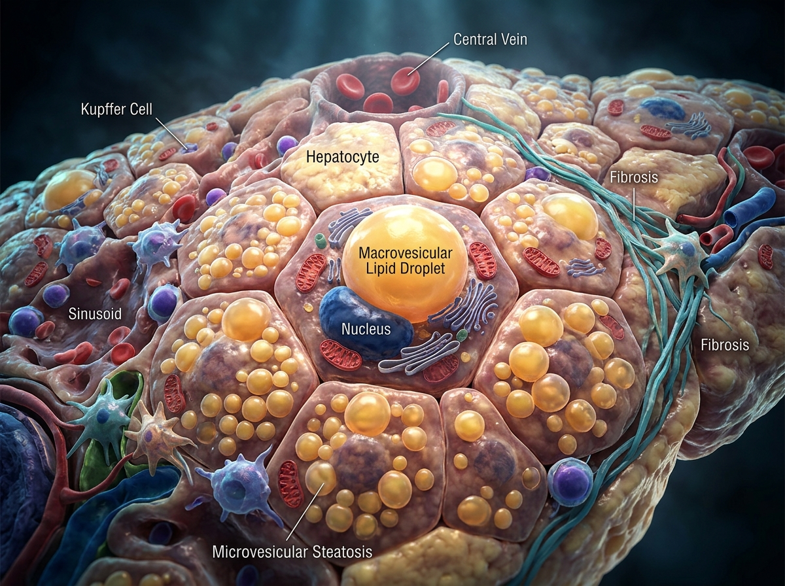
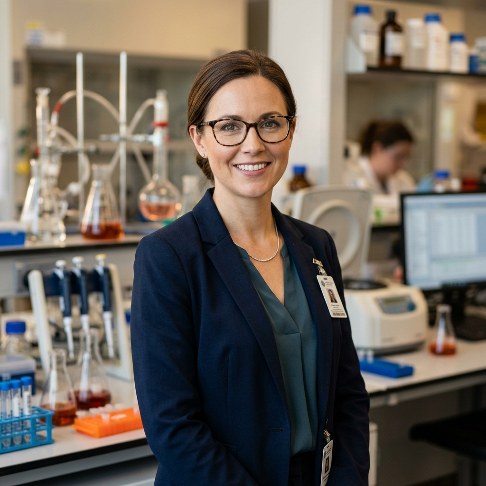

Decodificando el lenguaje oculto de los lípidos en el hígado.
Desde 2007 desentrañando la fisiología hepática en la UPV/EHU y el IIS Biocruces Bizkaia. Investigación molecular y translacional de vanguardia para frenar la esteatohepatitis y el cáncer de hígado.

Cuatro frentes contra la enfermedad hepática.
Selecciona cada pilar para focalizar la diana de investigación o abre la memoria completa.
Esteatohepatitis Metabólica (MAFLD / MASH)
Análisis longitudinal de la lipotoxicidad y perfiles de fosfolípidos que impulsan el paso de esteatosis simple a cirrosis hepática.

18 investigadores en la primera línea biomédica.
Bajo la coordinación de la Dra. Patricia Aspichueta, nuestro equipo aglutina catedráticos, investigadores Ramón y Cajal, doctores posdoctorales y personal técnico.



Ciencia con rigor y transferencia.
Conectados desde Leioa con la biomedicina global.
Ubicados estratégicamente en el campus científico de la UPV/EHU y vinculados directamente al ecosistema hospitalario del IIS Biocruces Bizkaia.
Departamento de Fisiología
Facultad de Medicina y Enfermería • UPV/EHU
Barrio Sarriena s/n, 48940 Leioa, Bizkaia
IIS Biocruces Bizkaia
Plaza de Cruces s/n, 48903 Barakaldo, Bizkaia